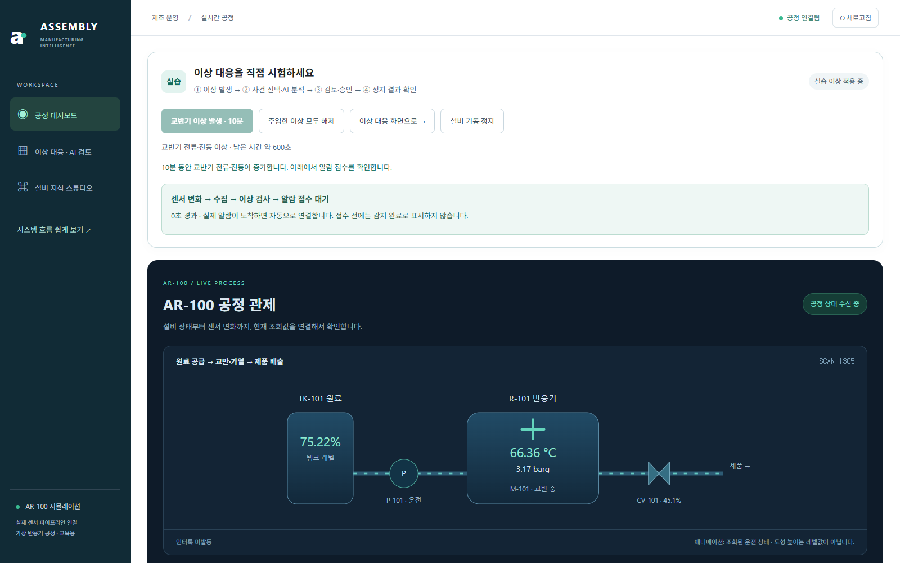
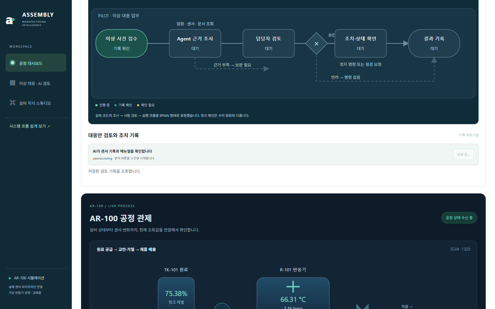
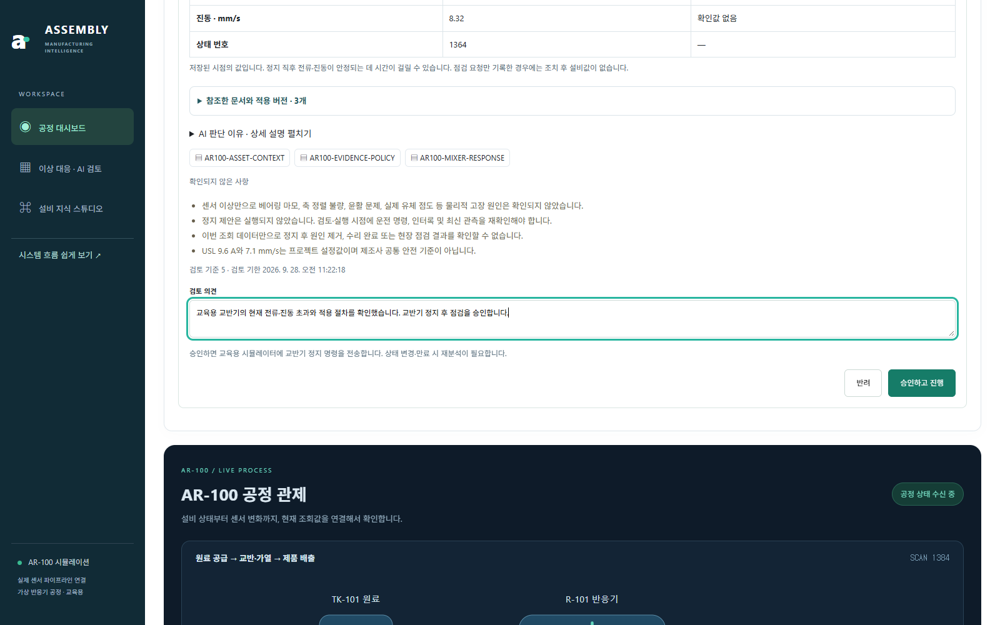
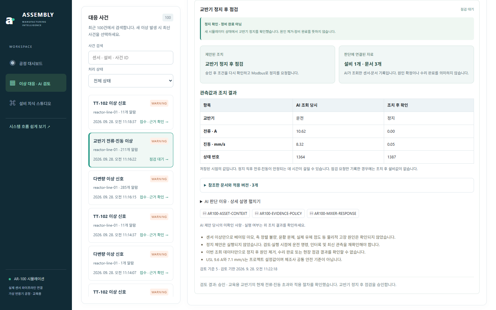
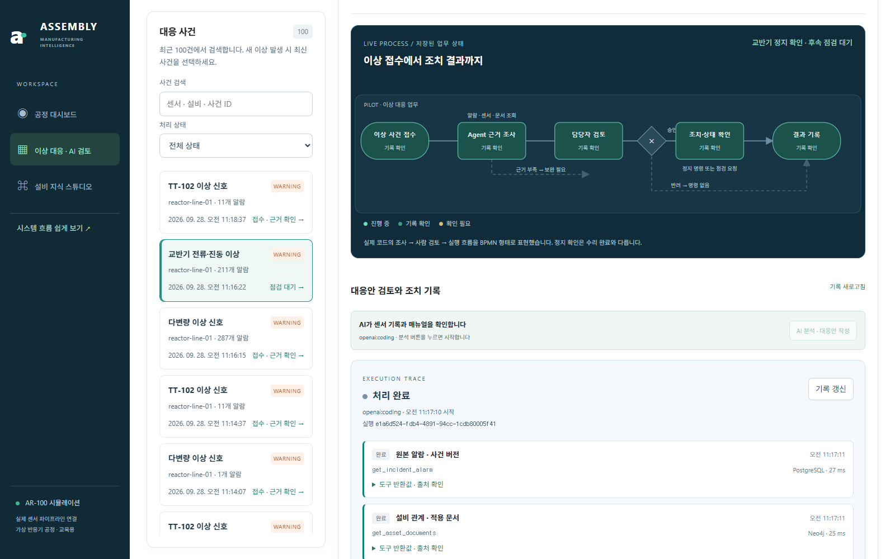
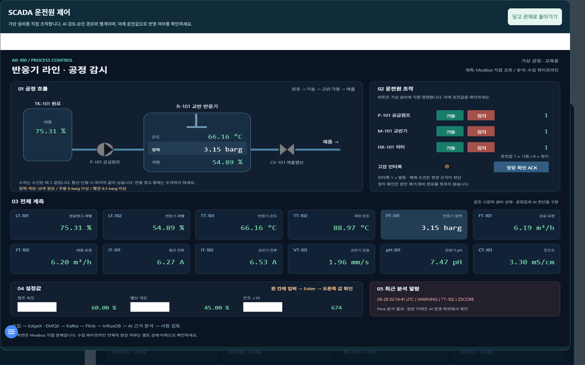

2026-09-28 · 교육용 가상 설비 · 실제 브라우저 실행
이상을 알아차리고,
사람이 승인한 뒤 교반기를 멈췄습니다.
이상 발생 → 알람 접수 → AI 조사 → 사람 승인 → Modbus 정지 → 새 상태 확인
아래는 실제 화면입니다. AI는 센서 기록과 문서를 조회했고, 담당자의 승인 후 프로그램이 가상 교반기에 정지 명령을 보냈습니다. 정지가 확인된 것이며 수리가 끝난 것은 아닙니다.
| 확인 항목 | AI 조회 당시 | 조치 후 확인 |
|---|
| 교반기 | 운전 | 정지 |
| 전류 | 10.62 A | 0.00 A |
| 진동 | 8.32 mm/s | 0.05 mm/s |
| 상태 번호 | 1364 | 1387 |
왼쪽은 AI가 조사할 때 읽은 값입니다. 명령 직전 값과는 구분합니다. 검증된 결과: stop_verified.
1. 버튼으로 이상을 발생시킵니다
대시보드의 ‘교반기 이상 발생’ 버튼을 눌렀습니다. 가상 설비의 전류와 진동이 올라가고, 수집·분석 프로그램을 거쳐 알람이 접수됩니다.

2. 접수된 사건에서 AI 조사를 시작합니다
사건이 자동으로 연결되고 사람이 AI 분석 버튼을 누릅니다. AI는 알람, 설비와 문서 관계, 과거와 현재 센서값을 도구로 조회합니다.
첫 분석 중 추가 알람으로 사건이 변경되어 처리가 중단됐습니다. 새 근거로 재분석해 검토안이 생성됐습니다. 이 첫 시도의 중단을 성공으로 숨기지 않았습니다.

3. 근거를 검토하고 승인합니다
AI가 ‘교반기 정지 후 점검’을 제안했습니다. 담당자는 전류·진동 초과와 적용 문서를 확인한 뒤 검토 의견을 입력하고 ‘승인하고 진행’을 눌렀습니다.

4. 실제 조치 결과를 확인합니다
실행 프로그램이 Modbus로 정지 명령을 보내고, 새 상태를 다시 읽었습니다. 화면에는 운전에서 정지로 바뀐 상태와 관측값이 나란히 표시됩니다. 문서와 AI 판단 이유도 펼쳐볼 수 있습니다.

5. 처리 흐름과 도구 기록이 남습니다
단계 표시는 서버에 저장된 실제 처리 상태를 따라갑니다. 조사에 사용한 도구, 출처, 소요시간과 이전 실패 기록을 확인할 수 있습니다.

설비 직접 조작도 같은 화면에서
‘설비 기동·정지’를 누르면 FUXA 화면이 대시보드 안에 열립니다. 운전원이 직접 조작하는 경로이며, AI 검토·승인 경로와 구분됩니다.
